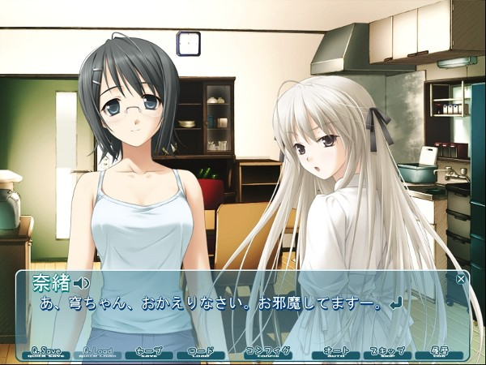
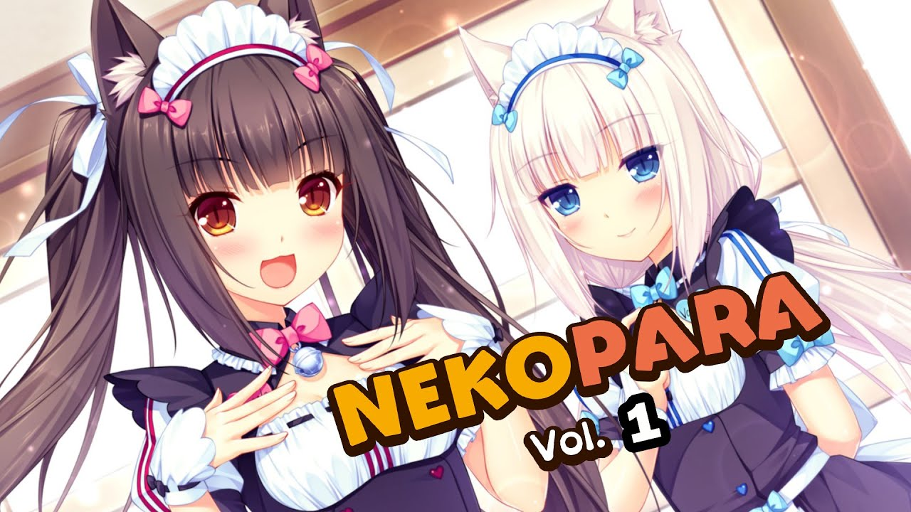
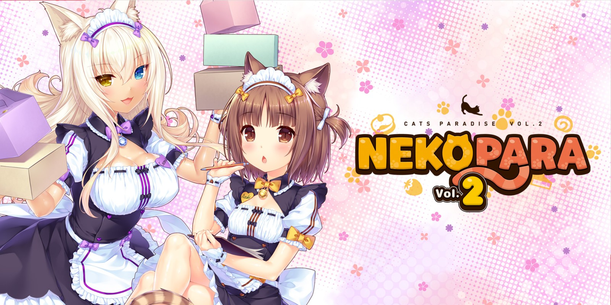
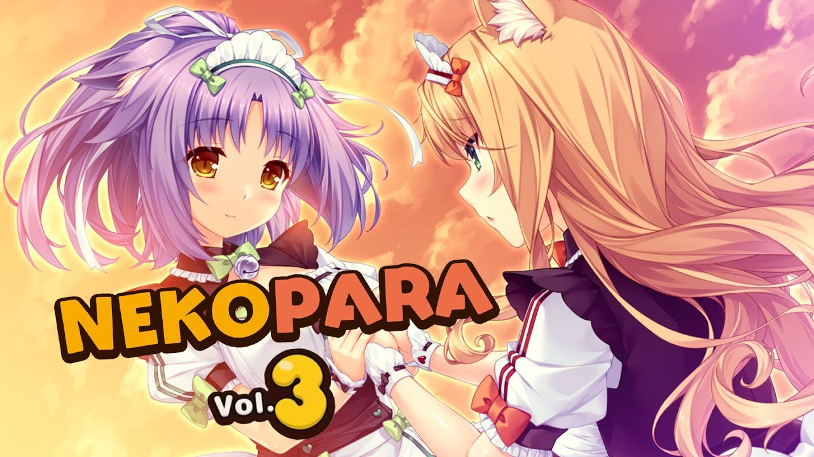
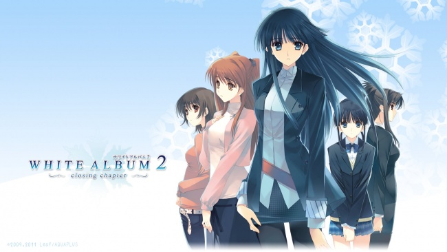

Yosuga no Sora
Yosuga no Sora (ヨスガノソラ, lit. Sky of Connection) is a Japanese romance/drama adult visual novel developed by CUFFS ("Sphere"). The game was originally released for Windows on December 5, 2008. It was adapted into a serialized manga and an anime television series. A sequel/fan disk titled Haruka na Sora was released later on October 24, 2009, which contains new and expanded scenarios for several characters from the original game.
more information

Nekopara
Nekopara (Japanese: ネコぱら) is a series of adult visual novels developed by Neko Works and published by Sekai Project. The first game in the series, Nekopara Vol. 1, was released on December 30, 2014.[1] The series is set in a world where humans live alongside catgirls, known as "Nekos", and are able to keep them as pets.
An all-ages anime OVA adaptation was released on Steam in December 2017; it became one of the top earners in Steam in December 2017.
An anime television series adaptation has been announced.
  

WHITE ALBUM2
White Album 2 (ホワイトアルバム2 Howaito Arubamu 2) is a trilogy of Japanese adult visual novels developed by the visual novel company Leaf for the Microsoft Windows PC, and is the sequel to Leaf's earlier visual novel, White Album. The first part of the series, named White Album 2: Introductory Chapter, was released on March 26, 2010. The second part in the series is named White Album 2: Closing Chapter and was released on December 22, 2011. An all-ages PlayStation 3 version combining both chapters published by Aquaplus was released in 2012 and ported for PlayStation Vita in 2013. A White Album 2 - Mini-After Story epilogue was released for Windows in 2014. White Album 2: Extended Edition, combining both chapters and the epilogue was released in 2018, also for Windows. The gameplay of White Album 2 follows a linear plot line which offers pre-determined scenarios with courses of interaction. An anime television series adaptation aired in Japan between October and December 2013.
more information